Wayang merupakan salah satu puncak seni budaya bangsa Indonesia yang paling menonjol di antara banyak karya budaya lainnya. Wayang meliputi seni peran, seni suara, seni musik, seni tutur, seni sastra, seni lukis, seni
pahat, dan seni perlambang.
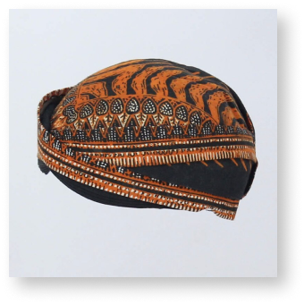
Blangkon
Blangkon adalah tutup kepala yang dibuat dari batik dan digunakan oleh kaum pria sebagai kelengkapan dari pakaian tradisional Jawa. Selain sebagai pelindung terhadap sinar matahari Blangkon juga mempunyai fungsi sosial
yang menunjukkan martabat atau kedudukan sosial bagi pemiliknya.
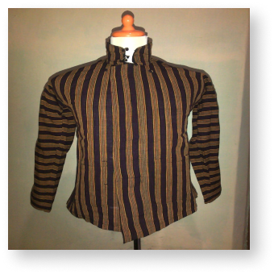
Surjan
Surjan menurut KRT Jatiningrat Tepas Dwarapura Keraton Yogyakarta, berasal dari istilah siro + jan yang berarti pelita atau yang memberi terang. Surjan juga disebut pakaian takwa.
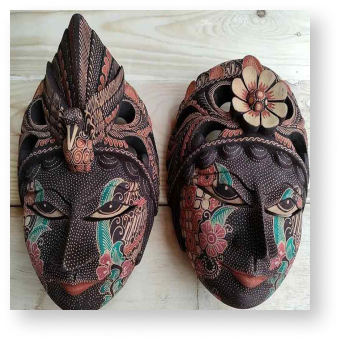
Topeng Batik
Topeng batik Jogja adalah seni pertunjukan tradisional dari Yogyakarta, Indonesia, yang menggabungkan topeng dan batik dalam sebuah pertunjukan. Aktor mengenakan topeng dan kostum batik sambil menari dan berbicara untuk menceritakan cerita atau legenda tradisional. Ini adalah bagian penting dari warisan budaya Yogyakarta dan bertujuan untuk melestarikan tradisi budaya daerah tersebut.
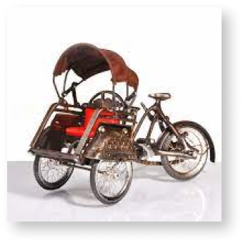
Miniatur
Miniatur khas Jogja adalah model kecil dari ikon dan landmark seperti Keraton, Candi Prambanan, Tugu Yogyakarta, becak, Alun-Alun Kidul, dan apapun yang ada di jogja. Mereka mencerminkan kebudayaan dan keindahan kota Yogyakarta serta sering dijadikan suvenir atau hiasan.
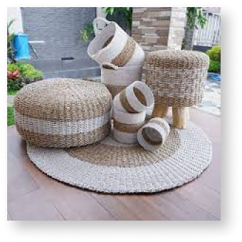
Anyaman
Anyaman khas Jogja adalah seni kerajinan tangan tradisional yang menggunakan bahan seperti bambu, pandan, dan mendong untuk membuat produk seperti tas, tikar, topi, dan keranjang. Ini adalah bagian penting dari warisan budaya dan kerajinan tangan di Yogyakarta.
Rekomendasi
KULINER
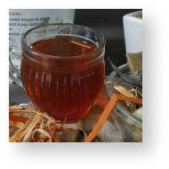
Wedang Uwuh
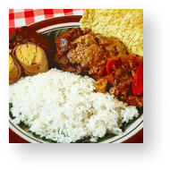
Gudeg
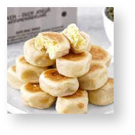
Bakpia
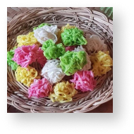
Geplak
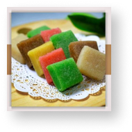
Yangko
Rekomendasi
BATIK
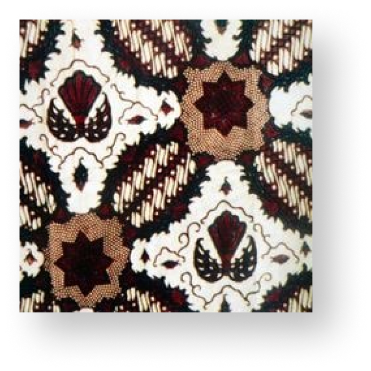
Wedang Uwuh
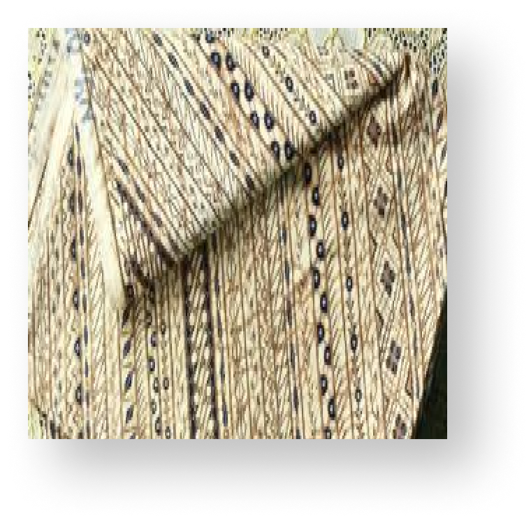
Wedang Uwuh
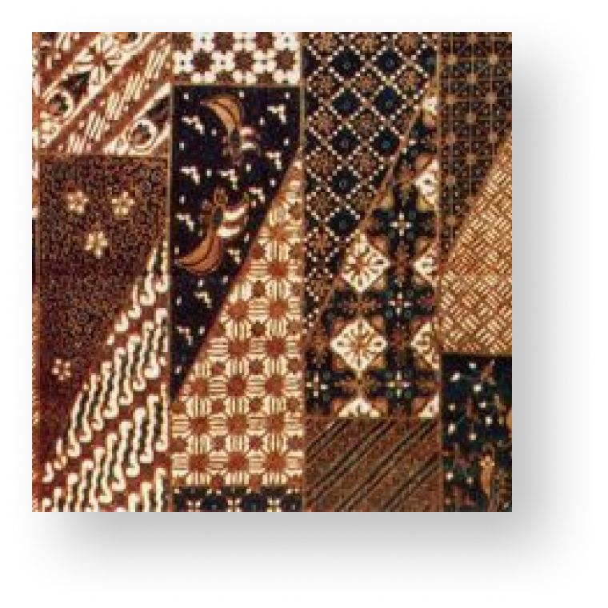
Wedang Uwuh
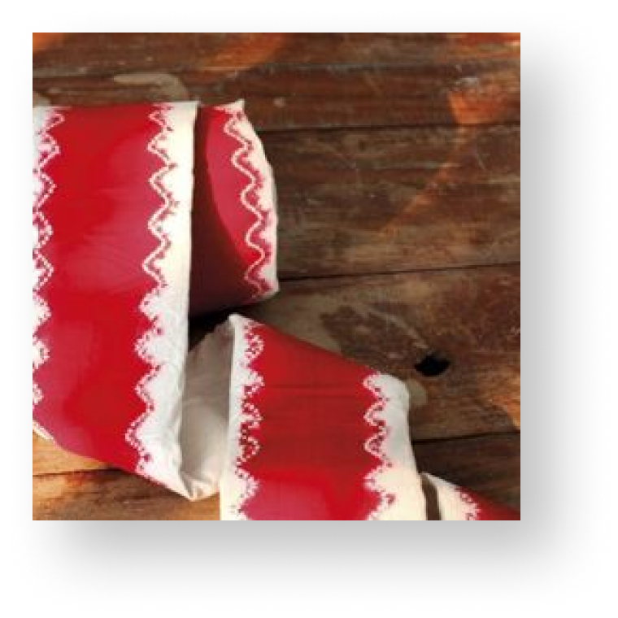
Wedang Uwuh
Coments
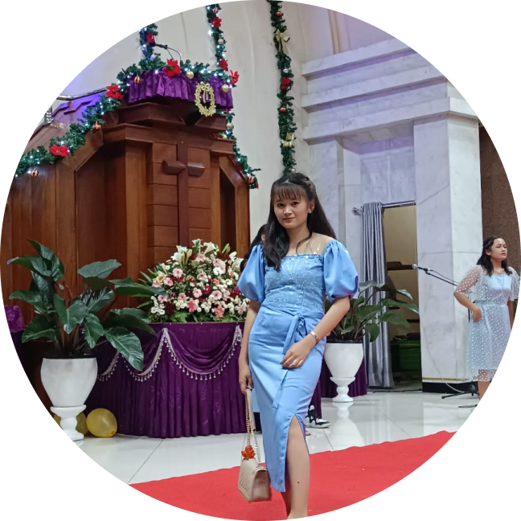
@KOCIK14_hlw
Baru pertama kali ke jogja dan ga tau apa-apa tentang jogja, eh pas lagi buka internet nemu web satu ini. Jogja Treasure the best siiiiii. Jdi ga perlu pusing lagi deh nyariin rekomendasi apapun tentang jogja.
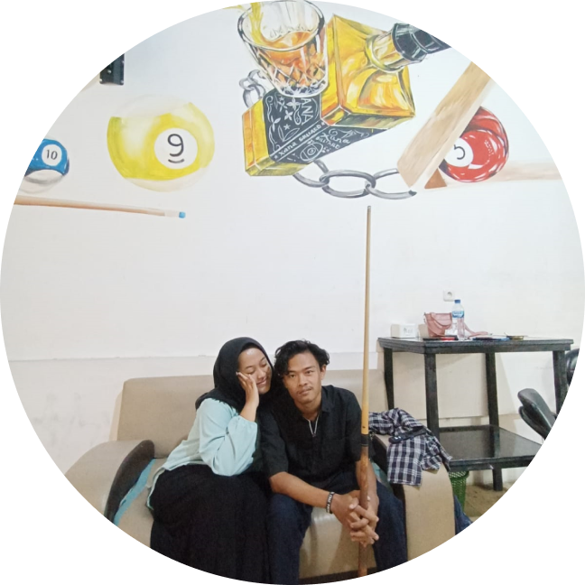
@KOCIK14_hlw
Saya sangat puas dengan pembelian saya. Kerajinan tangan ini melebihi harapan saya, dan saya berencana untuk kembali lagi dan akan merekomendasikan kepada teman”
@KOCIK14_hlw
Iseng-iseng buka google buat nyari oleh-oleh untuk teman,ehkk.. ketemu jogja treasure, mana rekomendasi pada bangus” lagi,Langsung capcussss deg beli
@KOCIK14_hlw
Aku tau Jogja Treasure ini dari rekomendasi teman aku katanya wesite ini bangus, tapi emeangg sabguss ituu woyyy mempermudah aku yang sebagai pengunjung jogja yang ingin membeli oleh-oleh